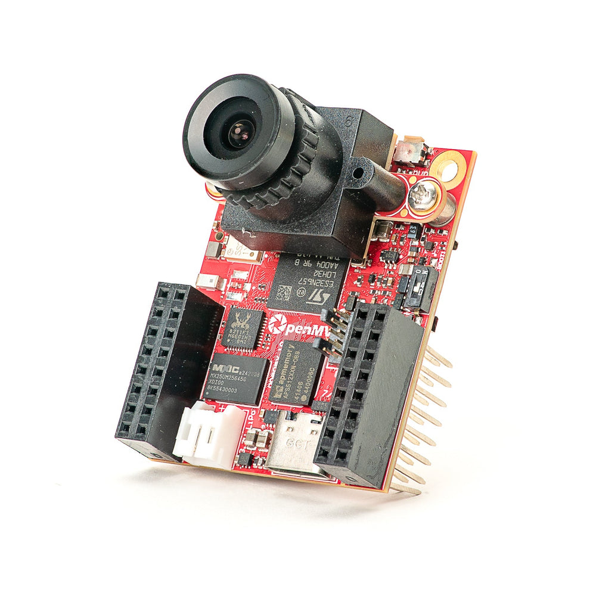

OpenMV N6¶
ה‑OpenMV N6 בנוי סביב המעבד STM32N657 של STMicroelectronics (Cortex‑M55 @ 800 MHz) עם NPU מובנה בתדר 1 GHz המדורג ב‑600 GOPS INT8. הלוח משלב את ה‑NPU עם חיישן ה‑global‑shutter PAG7936 בנפח 1 MP על נשא נשלף, Ethernet בקצב גיגה‑ביט, USB‑C במהירות גבוהה, Wi‑Fi ו‑Bluetooth 5.1, ומריץ הסקה של YOLOv8/YOLOv11 בקצב 30 FPS במקביל לסטרימינג וידאו חי.
{kind=link}

לדף נתונים מלא, תמונות ומידות ראו את דף המוצר של OpenMV N6.
עיקרי המאפיינים¶
STM32N657 Cortex‑M55 בתדר 800 MHz (1280 DMIPS) עם ARM Helium 128‑bit SIMD — תפוקת וקטור של 6.4 גיגה‑אופס.
NPU בתדר 1 GHz, 600 GOPS INT8 — מריץ זיהוי YOLOv8/YOLOv11 בקצב 30 FPS.
ISP עבור RAW Bayer של עד 5MP, 2D GPU לשינוי קנה מידה וסיבוב תלת‑ממדי, קידוד H.264 ל‑1080p, ו‑JPEG codec חומרתי.
64 MB SDRAM חיצוני (16‑bit @ 200 MHz DDR, 800 MB/s) בנוסף ל‑4.2 MB SRAM פנימי ו‑32 MB octal flash (200 MHz DDR, 400 MB/s).
חיישן PAG7936 צבעוני בנפח 1 MP מסוג global‑shutter.
IMU מובנה (תאוצה + גירוסקופ) ו‑מיקרופון למיזוג אודיו + תנועה.
USB‑C במהירות גבוהה (480 Mb/s, מגבלת זרם של 1.5 A), Ethernet בקצב גיגה‑ביט (תומך PoE באמצעות מגן), Wi‑Fi a/b/g/n + Bluetooth 5.1 (אנטנת שבב או אפשרות U.FL).
שקע microSD — SD עד 2 GB, SDHC עד 32 GB, SDXC עד 2 TB.
מטען LiPo (טעינה מהירה של 500 mA), ADC למתח הסוללה, RTC עם 8 KB של זיכרון גיבוי ופין ייעודי לסוללת גיבוי.
18 פיני I/O, כולם פלט 3.3 V / סובלני 3.3 V, 20 mA לכל פין, בעלי יכולת פסיקה.
נורית RGB למשתמש, לחצן משתמש, ונורית סטטוס נפרדת לטעינה / USB / מתח VIN.
אזהרה
פיני ה‑I/O של ה‑N6 אינם סובלניים ל‑5 V. אל תחברו את ההתקן ישירות ל‑MCU בעל 5 V כמו Arduino Mega. הזינו את ה‑N6 דרך VIN בלבד.
תרשים פינים¶

טבלת פינים¶
שם פין |
פונקציה |
|---|---|
P0 |
SPI2 MOSI / I2S2 SDO |
P1 |
SPI2 MISO / I2S2 SDI |
P2 |
SPI2 SCLK / UART4 TX / CAN1 TX / I2S2 CK |
P3 |
SPI2 SS / UART4 RX / CAN1 RX / I2S2 WS |
P4 |
I2C2 SCL / UART3 TX / TIM2 CH3 / I3C2 SCL |
P5 |
I2C2 SDA / UART3 RX / TIM2 CH4 / I3C2 SDA |
P6 |
TIM12 CH1 (אין ADC בפין זה — ראו |
P6_ADC |
כניסת ADC ייעודית של 12‑bit (מחוברת פנימית ל‑P6) |
P7 |
TIM4 CH1 |
P8 |
TIM4 CH2 |
P9 |
TIM17 CH1 |
P10 |
TIM15 CH2 / I/O לסנכרון פריימים |
P11 |
wakeup (פעיל בנמוך, WKUP3) |
P12 |
RESET — משכו ל‑GND כדי לאפס את הלוח (אינו GPIO) |
P13 |
UART7 RX |
P14 |
UART7 TX |
P15 |
SPI4 CS |
P16 |
SPI4 SCK |
P17 |
SPI4 MISO |
P18 |
SPI4 MOSI |
SW |
לחצן משתמש (פעיל בנמוך) |
ONOFF (SW2) |
לחצן יציאה משינה עמוקה (פעיל בנמוך, WKUP2) |
ST |
נמוך במתח VIN, גבוה במתח USB |
CHG |
פעיל בנמוך; נמוך בזמן שסוללת LiPo מחוברת נטענת |
PG |
פעיל בנמוך; נמוך כאשר קיים מתח VIN או USB |
BAT_ADC |
ערוץ ADC פנימי המודד את מתח סוללת ה‑LiPo המחוברת |
LED_RED |
ערוץ אדום של נורית RGB (פעיל בנמוך) |
LED_GREEN |
ערוץ ירוק של נורית RGB (פעיל בנמוך) |
LED_BLUE |
ערוץ כחול של נורית RGB (פעיל בנמוך) |
הערה
קו סנכרון הפריימים P10 הוא אפיק משותף. הוא מחווט אל ה‑MCU, אל פין ההדק / החשיפה של חיישן המצלמה, ואל מחבר המשתמש — כולם בו‑זמנית. הכיוון מוגדר על ידי היישום — ה‑MCU, החיישן, או אות חיצוני יכולים להניע אותו בהתאם לאופן שבו החיישן מוגדר (חלק מהחיישנים יכולים להשתמש באותו פין כקלט הדק או כפלט חשיפה). ודאו שרק מניע אחד פעיל בכל רגע.
הערה
ONOFF ו‑P11 מתייחסים למסילת ה‑RAW שתמיד פעילה (ולא למסילת ה‑3.3 V הממותגת), כך שהם נשארים פונקציונליים בזמן ששאר הלוח נמצא במצב שינה עמוקה / צריכת מתח נמוכה. שני הקלטים פעילים בנמוך.
פינים אלו עוברים דרך מסיטי מתח (level shifters) כדי שיוכלו לרכוב על מסילת ה‑RAW. אם אתם זקוקים בהחלט להתנהגות GPIO ישירה של 3.3 V על ONOFF או P11 (למשל כדי להניע אותם מ‑MCU של 3.3 V מבלי לעבור דרך המסיט), הלוח חושף משטחי גישור (jumper pads) של pull‑up ושל 0‑אוהם המאפשרים לעקוף את המסיט. זוהי עבודת חומרה מתקדמת — רוב המשתמשים צריכים להשאיר זאת כפי שהוא.
הערה
P15–P18 משותפים עם ה‑PHY של Gigabit Ethernet, המחווט ופעיל כברירת מחדל. כדי להשתמש בפינים אלו כ‑I/O למשתמש עליכם להלחים מחדש (reflow) את הנגד של 0‑אוהם בגב הלוח אל מיקום ה‑GPIO. פעולה זו מנטרלת רק את Gigabit Ethernet — Ethernet בקצב 10/100 Mb/s ממשיך לעבוד על הפינים הייעודיים שלו.
פיני מתח¶
3.3V — מסילת 3.3 V מיוצבת. פלט בלבד ב‑N6 — אל תזינו מתח חיצוני לפין זה. עד 1 A זמין למגנים.
VIN — כניסת 5 V. מזינה את הלוח ואת מטען ה‑LiPo המובנה.
RAW — קלט/פלט, תמיד פעיל (3.6 V – 5 V). נושא את מקור המתח הפעיל (VIN, USB, או סוללה מחוברת), וניתן להשתמש בו גם ככניסה. עליכם להניע את RAW דרך דיודה טורית בעת הזנת מתח לתוכו — אחרת זרם יזרום בחזרה לתוך VIN/USB ויפגע באספקת המתח או בהגנה המובנית.
GND — אדמה משותפת.
הערה
שבב ניהול המתח המובנה בוחר אוטומטית מבין USB או VIN את בעל המתח הגבוה יותר כדי להזין את הלוח ואת מטען הסוללה. אם מחוברת סוללת LiPo היא נטענת מעודף המתח הזמין, והבקר נופל בחזרה לסוללה כדי לשמור על פעולת הלוח אם VIN/USB צונחים או מנותקים.
הערה
בגב הלוח קיימים משטחי הלחמה עבור סוללת גיבוי חיצונית של 3.3 V ל‑RTC. חיווט סוללת מטבע למשטחים אלו שומר על פעולת ה‑RTC ושל 8 KB זיכרון הגיבוי בזמן ששאר הלוח אינו מקבל מתח.
טיפ
השתמשו במעריך חיי הסוללה כדי לדמות כמה זמן ה‑N6 יפעל על סוללה עבור מחזור עבודה נתון של פעילות / שינה עמוקה.
פיני Ethernet¶
ה‑N6 חושף את זוגות ה‑MDI של ה‑PHY של ה‑Ethernet על משטחים ייעודיים לצד מחבר ה‑GPIO. פיני ה‑MDI אינם בטוחים לחיווט ישיר אל RJ45 — רכיבי מגנטיקה של Ethernet (שנאי בידוד, מובנה במחבר magjack או על המגן) הם הכרחיים בין ה‑PHY לבין הכבל. מגן ה‑PoE של OpenMV כולל אותם; אם אתם מייצרים מחבר משלכם, השתמשו ב‑RJ45 משולב מגנטיקה או בשנאי חיצוני.
ETH_LED — נורית קישור/פעילות. פעילה בנמוך כאשר קיים קישור; מהבהבת בעת תעבורה.
DA P / DA N — זוג A (TX ב‑10/100, בשימוש בכל המהירויות).
DB P / DB N — זוג B (RX ב‑10/100, בשימוש בכל המהירויות).
DC P / DC N — זוג C, בשימוש רק בקצב גיגה‑ביט.
DD P / DD N — זוג D, בשימוש רק בקצב גיגה‑ביט.
קצב 10/100 Mb/s זקוק רק לזוגות A ו‑B. גיגה‑ביט זקוק לכל ארבעת הזוגות A–D.
פיני שחזור וניפוי באגים¶
RESET — משכו ל‑GND כדי לאפס את הלוח. שחרורו מאפשר ל‑MCU להתחיל לפעול כרגיל.
BOOT0 — משכו ל‑3.3 V בזמן הזנת מתח ללוח כדי להיכנס למצב ROM bootloader. OpenMV IDE משתמש במצב זה כדי להבריק מחדש את ה‑bootloader המובנה.
BOOT1 — מתג המעביר את הלוח למצב מפתח לשימוש עם כלי ST (ST‑LINK המחובר למחבר ה‑SWD/JTAG בן 10 הפינים של ARM). השאירו זאת מנוטרל לפעולה רגילה עם קושחה וכלים של OpenMV.
מותקן מחבר SWD/JTAG בן 10 פינים של ARM ייעודי, תואם למתאמי ST‑LINK ו‑SEGGER J‑Link.
התקנים היקפיים מובנים¶
נוריות LED¶
ל‑N6 שתי נוריות RGB:
נורית RGB למשתמש — ניתנת לשליטה תוכנתית, חשופה כ‑
LED_RED,LED_GREENו‑LED_BLUEfrom machine import LED LED("LED_RED").on() LED("LED_GREEN").on() LED("LED_BLUE").on()
נורית מתח — מונעת ישירות על ידי חומרת ניהול המתח המובנית, ללא שליטה תוכנתית. השתמשו בה כדי לזהות מבט אחד את מצב אספקת המתח.
במהלך הריצה:
ערוץ
משמעות
כחול
VIN מזין את הלוח (כבוי במתח USB)
ירוק
קיים מתח USB או VIN
אדום
טעינה של סוללת LiPo מחוברת
בשינה עמוקה כל הערוצים כבויים למעט האדום, שעדיין נדלק בזמן שסוללת LiPo נטענת.
פיני סטטוס מתח¶
שלושה קלטי סטטוס פעילים‑בנמוך מאפשרים לקושחה לראות מה שבב ניהול המתח המובנה עושה:
ST — נמוך כאשר הלוח פועל על VIN, גבוה כאשר פועל על מתח USB.
CHG — נמוך בזמן שסוללת LiPo מחוברת נטענת.
PG — נמוך כאשר קיים מתח VIN או USB.
from machine import Pin
on_vin = not Pin("ST", Pin.IN).value()
charging = not Pin("CHG", Pin.IN).value()
power_ok = not Pin("PG", Pin.IN).value()
חיישן מצלמה¶
ה‑PAG7936 מונע דרך מודול הcsi — חיישני מצלמה
import csi
cam = csi.CSI()
cam.reset()
cam.pixformat(csi.RGB565)
cam.framesize(csi.HD) # 1280×800
cam.snapshot(time=2000) # let auto‑exposure settle
while True:
img = cam.snapshot()
החיישן יושב על מודול נשלף — החליפו אותו בכל אחד ממודולי המצלמה האחרים של OpenMV (global shutter, תרמי, רזולוציה גבוהה יותר וכו«) מבלי לשנות את שאר הלוח.
ה‑PAG7936 תומך במצב מופעל‑הדק (triggered) — אינטגרציית הפיקסלים מתיישרת בדיוק עם כל קריאת csi.CSI.snapshot במקום עם שעון הפריים הרץ חופשי, שימושי לסנכרון לכידה לאירוע חיצוני או לחיישן אחר. הפעילו זאת דרך csi.CSI.ioctl עם csi.IOCTL_SET_TRIGGERED_MODE. קצב הפריימים יורד לכמחצית ממצב הריצה החופשית מאחר שהקריאה כבר אינה מתבצעת בצנרת (pipeline) עם אינטגרציית הפריים הבא:
cam.ioctl(csi.IOCTL_SET_TRIGGERED_MODE, True)
NPU¶
ה‑Neural‑ART NPU של ה‑N6 בתדר 1 GHz (600 GOPS INT8) חשוף דרך מודול הml — למידת מכונה. מודלים המאוחסנים במערכת הקבצים לקריאה בלבד /rom נטענים ישירות מה‑flash מבלי להעתיק ל‑RAM, כך שאפילו מזהים גדולים נכנסים בנוחות לצד חוצץ הפריימים החי. הריצו מזהה YOLOv8 על כל פריים וציירו את התחזיות על גבי התמונה החיה:
import csi
import time
import ml
from ml.postprocessing.ultralytics import YoloV8
# Initialize the sensor.
csi0 = csi.CSI()
csi0.reset()
csi0.pixformat(csi.RGB565)
csi0.framesize(csi.VGA)
# Load YOLO V8 model from ROM FS.
model = ml.Model("/rom/yolov8n_192.tflite", postprocess=YoloV8(threshold=0.4))
print(model)
# Visualization parameters.
n = len(model.labels)
model_class_colors = [
(int(255 * i // n), int(255 * (n - i - 1) // n), 255)
for i in range(n)
]
clock = time.clock()
while True:
clock.tick()
img = csi0.snapshot()
# boxes is a list of list per class of ((x, y, w, h), score) tuples
boxes = model.predict([img])
# Draw bounding boxes around the detected objects
for i, class_detections in enumerate(boxes):
rects = [r for r, score in class_detections]
labels = [model.labels[i] for j in range(len(rects))]
colors = [model_class_colors[i] for j in range(len(rects))]
ml.utils.draw_predictions(img, rects, labels, colors, format=None)
print(clock.fps(), "fps")
מיקרופון¶
המיקרופון המובנה נלכד דרך audio — מודול אודיו. כל חוצץ מגיע כ‑bytearray של PCM ב‑signed‑16‑bit, מה שהופך לטריוויאלי להזין אותו אל ulab/numpy לצורך DSP מהיר. מזהה עוצמת קול פשוט — מדפיס בכל פעם שעוצמת ה‑RMS חוצה סף:
import audio
from ulab import numpy as np
def loudness(pcmbuf):
samples = np.array(np.frombuffer(pcmbuf, dtype=np.int16), dtype=np.float)
rms = np.sqrt(np.mean(samples ** 2))
if rms > 10000:
print("Loud!", int(rms))
audio.init(channels=1, frequency=16000, gain_db=24)
audio.start_streaming(loudness)
while True:
pass
IMU¶
התאוצה + הגירוסקופ המובנים מתחת למודול המצלמה חשופים דרך imu — חיישן imu
import imu
import time
while True:
print(imu.acceleration_mg()) # (x, y, z) in milli‑g
print(imu.angular_rate_mdps()) # (x, y, z) in milli‑deg/s
time.sleep_ms(100)
Wi‑Fi¶
ה‑CYW43439 המובנה חשוף דרך network — הגדרת רשת כממשק תחנה. לאחר ההתחברות, ipconfig("addr4") מחזיר את הזוג (ip, netmask)
import network, time
wlan = network.WLAN(network.STA_IF)
wlan.active(True)
wlan.connect("ssid", "password")
while not wlan.isconnected():
time.sleep(1)
print("Wi‑Fi IP:", wlan.ipconfig("addr4")[0])
Bluetooth¶
אותו CYW43439 חושף גם Bluetooth 5.1. השתמשו בaioble — BLE אסינכרוני עבור BLE ידידותי ל‑asyncio — לדוגמה, פרסמו (advertise) כהתקן היקפי והמתינו ל‑central שיתחבר:
import asyncio
import aioble
async def run():
while True:
conn = await aioble.advertise(250_000, name="OpenMV-N6")
print("Connected:", conn.device)
await conn.disconnected()
asyncio.run(run())
Ethernet¶
כאשר RJ45 (עם מגנטיקה) מחובר למשטחי ה‑MDI, ה‑PHY של גיגה‑ביט מופיע כממשק LAN. DHCP פועל אוטומטית ברגע שהקישור עולה:
import network, time
lan = network.LAN()
lan.active(True)
while not lan.isconnected():
time.sleep(1)
print("Ethernet IP:", lan.ipconfig("addr4")[0])
כרטיס microSD¶
כאשר כרטיס מוכנס הוא מעוגן (mounted) אוטומטית ב‑/sdcard וניתן לשימוש דרך מערכת הקבצים הרגילה:
import os
for entry in os.listdir("/sdcard"):
print(entry)
טבלת אפיקים¶
GPIO¶
השתמשו בmachine.Pin כדי לקרוא או להניע כל אחד מהפינים המסומנים בהדפס המשי. הפלטים הם 3.3 V CMOS ויכולים לשקוע/לספק עד 20 mA לכל פין.
from machine import Pin
out = Pin("P0", Pin.OUT)
out.on()
out.off()
out.value(1)
inp = Pin("P1", Pin.IN, Pin.PULL_UP)
print(inp.value())
כל פין כניסה יכול גם להפעיל פסיקה במעברי קצה:
def handler(pin):
print("triggered:", pin)
Pin("P1", Pin.IN, Pin.PULL_UP).irq(
handler, Pin.IRQ_FALLING | Pin.IRQ_RISING,
)
UART¶
אפיק |
TX |
RX |
|---|---|---|
UART3 |
P4 |
P5 |
UART4 |
P2 |
P3 |
UART7 |
P14 |
P13 |
from machine import UART
uart = UART(3, baudrate=115200)
uart.write("hello")
uart.read(5)
I²C¶
אפיק |
SCL |
SDA |
|---|---|---|
I2C2 |
P4 |
P5 |
from machine import I2C
i2c = I2C(2, freq=400_000)
i2c.scan()
i2c.writeto(0x76, b"hi")
ניתן להשתמש באותה חומרה גם במצב יעד (slave) דרך machine.I2CTarget כדי לחשוף אזור זיכרון לבקר I²C אחר:
from machine import I2CTarget
buf = bytearray(32)
target = I2CTarget(2, addr=0x42, mem=buf)
SPI¶
אפיק |
MOSI |
MISO |
SCK |
CS |
|---|---|---|---|---|
SPI2 |
P0 |
P1 |
P2 |
P3 |
SPI4 |
P18 |
P17 |
P16 |
P15 |
from machine import SPI
from machine import Pin
spi = SPI(2, baudrate=10_000_000)
cs = Pin("P3", Pin.OUT, value=1) # CS is not driven by the SPI peripheral
cs.value(0)
spi.write(b"hello")
cs.value(1)
CAN¶
אפיק |
TX |
RX |
|---|---|---|
CAN1 |
P2 |
P3 |
הערה
CAN עדיין אינו נתמך בלוח זה בקושחה v5.0.0.
from machine import CAN
can = CAN(1, 500_000)
can.set_filters(None)
can.send(0x123, b"\xDE\xAD\xBE\xEF")
print(can.recv())
ADC¶
שני ערוצי ה‑ADC עוברים דרך מחלק מתח עם חוצץ op‑amp לפני שהם מגיעים ל‑MCU, כך ש‑read_u16() ממופה למתח כניסה שונה בקנה מידה מלא בכל פין.
פין |
קנה מידה מלא |
הערות |
|---|---|---|
P6_ADC |
~3.3 V |
משטח לשימוש כללי, מחובר פנימית ל‑P6 |
BAT_ADC |
~5.0 V |
ערוץ פנימי עבור סוללת ה‑LiPo |
from machine import ADC
import time
adc = ADC("P6_ADC")
bat = ADC("BAT_ADC")
while True:
print("P6:", adc.read_u16() * 3.3 / 65535, "V")
print("BAT:", bat.read_u16() * 5.0 / 65535, "V")
time.sleep_ms(100)
PWM¶
פין |
טיימר / ערוץ |
|---|---|
P4 |
TIM2 CH3 |
P5 |
TIM2 CH4 |
P6 |
TIM12 CH1 |
P7 |
TIM4 CH1 |
P8 |
TIM4 CH2 |
P9 |
TIM17 CH1 |
P10 |
TIM15 CH2 |
הניעו כל אחד מהם דרך machine.PWM
from machine import Pin, PWM
pwm = PWM(Pin("P6"), freq=1_000, duty_u16=32768)
אפיקים תוכנתיים (bit‑banged)¶
machine.SoftI2C ו‑machine.SoftSPI עובדים על כל GPIO אם אתם זקוקים לאפיק נוסף.
חיישן תרמי (חיצוני ללוח)¶
הקושחה כוללת את מנהל ההתקן fir — מנהל התקן לחיישן תרמי (fir == far infrared) עבור מצלמות תרמיות מחווטות חיצונית:
MLX90621 — מערך IR בגודל 16 × 4
MLX90640 — מערך IR בגודל 32 × 24
MLX90641 — מערך IR בגודל 16 × 12
AMG8833 — מערך IR בגודל 8 × 8
חווטו את המודול לאפיק ה‑I²C של הלוח וקראו פריימים עם fir.init() + fir.snapshot()
import time
import image
import fir
fir.init() # auto‑detects the sensor
clock = time.clock()
while True:
clock.tick()
try:
img = fir.snapshot(x_scale=5, y_scale=5,
color_palette=image.PALETTE_IRONBOW,
hint=image.BICUBIC,
copy_to_fb=True)
except OSError:
continue
print(clock.fps())
מנהל ההתקן fir מתקשר עם החיישן רק דרך I²C 2 — חווטו את המודול אל P4 (SCL) ואל P5 (SDA).
תזמון¶
time¶
מודול הtime מכסה השהיות חוסמות, טיקים מונוטוניים, ומדידת זמן שחלף:
import time
time.sleep(1) # seconds
time.sleep_ms(500)
time.sleep_us(10)
start = time.ticks_ms()
# ...do work...
elapsed = time.ticks_diff(time.ticks_ms(), start)
טיימרים וירטואליים¶
machine.Timer מתזמן פונקציות callback מחזוריות או חד‑פעמיות מבלי לצרוך משבצת טיימר חומרתית. העבירו -1 כ‑id כדי להשתמש בטיימר וירטואלי (תוכנתי):
from machine import Timer
one_shot = Timer(-1)
one_shot.init(period=5_000, mode=Timer.ONE_SHOT,
callback=lambda t: print("once"))
periodic = Timer(-1)
periodic.init(period=2_000, mode=Timer.PERIODIC,
callback=lambda t: print("tick"))
ערכי המחזור הם במילישניות. קראו לdeinit() כדי לעצור ולשחרר את המשבצת.
שעון זמן אמת¶
machine.RTC שומר על זמן שעון‑קיר לאורך איפוסים ו(עם סוללת הגיבוי האופציונלית של 3.3 V המחווטת למשטחים האחוריים, ראו פיני מתח) לאורך אובדן מתח מלא:
from machine import RTC
rtc = RTC()
rtc.datetime((2026, 4, 30, 4, 12, 0, 0, 0)) # Y, M, D, weekday, h, m, s, subsec
print(rtc.datetime())
ה‑RTC פועל גם דרך שינה עמוקה, כך שניתן להשתמש בו כמקור יציאה משינה עבור machine.deepsleep().
Watchdog¶
machine.WDT מאפס את הלוח אם היישום נתקע. לאחר שהופעל אי אפשר לעצור או להגדיר אותו מחדש — האכילו אותו מעת לעת בתוך הלולאה הראשית שלכם:
from machine import WDT
wdt = WDT(timeout=5_000) # 5 second window
while True:
# ...do work...
wdt.feed()
מידע על אתחול ועל זמן ריצה¶
חלון bootloader של USB¶
בכל הדלקת מתח המצלמה מריצה bootloader קצר (כמה שניות) המאפשר ל‑OpenMV IDE לעדכן את הקושחה מבלי שהמשתמש יצטרך להיכנס למצב DFU. לאחר שהחלון פג ה‑bootloader מעביר את השליטה ל‑boot.py ולאחר מכן ל‑main.py.
סקריפט רץ יכול להיכנס מחדש ל‑bootloader לפי דרישה על ידי קריאה לmachine.bootloader()
import machine
machine.bootloader()
מערכת קבצים וסדר אתחול¶
קושחת ה‑N6 מעגנת עד שלוש מערכות קבצים באתחול:
flash פנימי — תמיד מעוגן ב‑
/flash. מחזיק אתmain.pyואתREADME.txtכברירת מחדל; נוצר באתחול הראשון.כרטיס microSD — אם מוכנס כרטיס הוא מעוגן ב‑
/sdcard.ROMFS — מערכת קבצים לקריאה בלבד, ממופת לזיכרון, ב‑
/rom, המשמשת לשליחת נכסי נתונים גדולים (למשל מודלי AI) שנהנים מגישת zero‑copy. מעוגנת אוטומטית על ידי MicroPython בעת ההפעלה, לפני שכל קוד Python של המשתמש רץ.
לאחר העיגון, ספריית העבודה נקבעת ל‑/sdcard כאשר הכרטיס נוכח, אחרת ל‑/flash. המפרש מריץ לאחר מכן סקריפטים מאותה ספרייה:
boot.pyמורץ בכל איפוס רך (כל soft reset: אתחול קר,Ctrl‑Dמה‑REPL, או בכל פעם שהסקריפט הרץ חוזר).main.pyמורץ רק באתחול קר, מיד לאחרboot.py. איפוסים רכים עוקבים מריצים מחדש אתboot.pyאך נופלים ישירות ל‑REPL — כדי להריץ מחדש אתmain.pyעליכם לאפס את הלוח לחלוטין.
הנחת boot.py או main.py על כרטיס ה‑SD דורסת את העותק שב‑flash מבלי לגעת בו — שני הקבצים מחופשים בספריית האתחול (/sdcard כאשר הכרטיס מעוגן, אחרת /flash).
ברירת המחדל של main.py הנשלחת על לוח שזה עתה הוברק רק מהבהבת את הערוץ הכחול של נורית ה‑RGB למשתמש כפעימת לב (שני פולסים קצרים, מרווח קצר), כך שתוכלו לדעת שהקושחה אותחלה כראוי ללא כל מארח מחובר.
sys.path מורחב כדי לכלול את כל שלוש מערכות הקבצים ואת תת‑הספריות lib/ שלהן, כך שמודולים הניתנים לייבוא יכולים לשכון ב‑/flash/lib, ב‑/sdcard/lib, או ב‑/rom/lib.
כדי לאלץ את המערכת להתעלם מכרטיס SD מוכנס (למשל כדי להריץ את main.py שב‑flash גם כאשר כרטיס נוכח), צרו קובץ ריק בשם SKIPSD בשורש של /flash.
כאשר מחובר דרך USB, מערכת הקבצים של האתחול (/sdcard אם כרטיס נוכח, אחרת /flash) גם מונה ככונן אחסון‑המוני (mass‑storage) של USB במארח, ומאפשרת לכם לערוך את boot.py, main.py, וכל קובץ אחר ישירות. הוציאו את הכונן לפני איפוס המצלמה כדי שהמארח ירוקן את הכתיבות שבמטמון.
הערה
מאחר שמערכת ההפעלה מתייחסת לכונן כהתקן בלוק פסיבי, קבצים שנוצרו או שונו על ידי קוד הרץ על OpenMV Cam לא יופיעו עד שהמארח יעגן מחדש את הכונן. אם גם מערכת ההפעלה וגם OpenMV Cam כותבות לאותה מערכת קבצים בו‑זמנית, מערכת ההפעלה תנצח ותדרוס שינויים שנעשו על ידי המצלמה. השתמשו בכרטיס ה‑SD עבור כל נתון שהסקריפט כותב בחזרה, ועגנו מחדש לפני קריאת קבצים אלו מהמארח.
הערה
הערוץ האדום של נורית ה‑RGB למשתמש עשוי להידלק לרגע בזמן שהמארח קורא מכונן אחסון‑ההמוני של USB או כותב אליו — זהו מחוון פעילות מונע‑קושחה, לא תקלה.
גדלי אחסון¶
ה‑N6 נשלח עם:
/flash— מערכת קבצים FAT בגודל 4 MB, קריאה/כתיבה./rom— ROMFS בגודל 24 MB לקריאה בלבד הממופה לזיכרון, המשמש לשליחת סקריפטים ומודלי ML שנהנים מגישת mmap מסוג zero‑copy./sdcard— הגודל המלא של כל כרטיס microSD שמוכנס (כאשר נוכח), קריאה/כתיבה.
מחוון תקלה קשה (hard‑fault)¶
אם נורית ה‑RGB למשתמש מחזרת במהירות בין כל הצבעים — מהר מספיק שזה נוטה להיראות כמו נורית לבנה מנצנצת ולא כגוונים נפרדים — הקושחה נתקלה בתקלה קשה בלתי ניתנת לשחזור. הבריקו מחדש את הקושחה כדי להתאושש; אם הברקה מחדש אינה עוזרת, ייתכן שהלוח נפגע פיזית.
ספריות תוכנה¶
ראו את אינדקס הספרייה לרשימה המלאה של המודולים — כולל אלו הייחודיים לבניית ה‑N6.